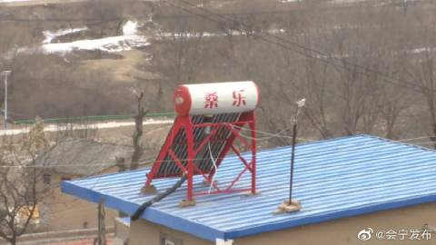
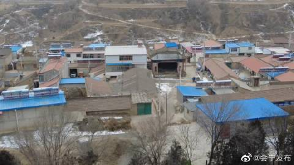
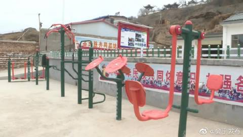
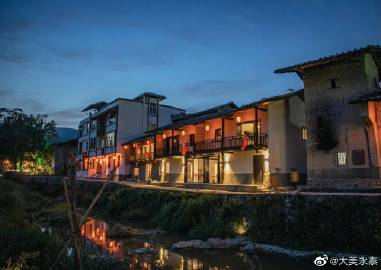
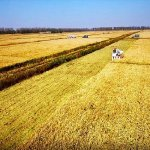
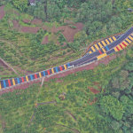

【#习声回响#·温暖聆听｜#绘就乡村振兴的壮美画卷#】人民幸福，大国之重。在全面建设社会主义现代化国家的新征程上，我们坚持以人民为中心的发展思想，携手努力，如期打赢脱贫攻坚战、疫情防控坚决有力、冬奥圣火熊熊燃烧、航天事业再创佳绩……一个个令人振奋的成绩，是中国共产党团结带领全国各族人 展开c
【公安记忆2021·小康圆梦 乡村振兴】去最偏远的乡村，同贫困群众想在一起、过在一起、干在一起……在脱贫攻坚的伟大征程中，全国公安机关坚决扛起定点扶贫的政治责任，广大扶贫民警带着对贫困群众最真挚的情感，把根深深扎在脱贫攻坚一线，用脚步丈量土地，用汗水浇灌收获，用行动和坚守生动诠释了脱贫 展开c
2021年02月26日 07:00 来自 微博 weibo.com
#国家乡村振兴局挂牌#【你好，我是国家乡村振兴局![[憧憬]](./2022_02_03_绘就乡村振兴的壮美画卷_files/2018new_chongjing_org.png "[憧憬]") 】2月25日下午，国家乡村振兴局正式挂牌成立。民族要复兴，乡村必振兴。我们还要咬定青山不放松，脚踏实地加油干，努力绘就乡村振兴的壮美画卷，朝着共同富裕的目标稳步前行。关注乡村振兴，关注我吧～
】2月25日下午，国家乡村振兴局正式挂牌成立。民族要复兴，乡村必振兴。我们还要咬定青山不放松，脚踏实地加油干，努力绘就乡村振兴的壮美画卷，朝着共同富裕的目标稳步前行。关注乡村振兴，关注我吧～![[打call]](./2022_02_03_绘就乡村振兴的壮美画卷_files/moren_dacall02_org.png "[打call]")
《云南日报》发表南耀平文章：绘就更加壮美的云岭画卷
@永善发布 2021年11月26日 11:31
面试热点：持续选派驻村书记，绘就更美振兴画卷
@北京数码中公教育 2021年08月29日 15:26
【#习声回响#·温暖聆听｜#绘就乡村振兴的壮美画卷#】人民幸福，大国之重。在全面建设社会主义现代化国家的新征程上，我们坚持以人民为中心的发展思想，携手努力，如期打赢脱贫攻坚战、疫情防控坚决有力、冬奥圣火熊熊燃烧、航天事业再创佳绩……一个个令人振奋的成绩，是中国共产党团结带领全国各族人 展开c
#青春三下乡##乡村振兴#
寒假红色专项实践活动
乡村小纵队第一站——对话云南宁蒗彝族自治县金棉乡乡村支教教师
“咬定青山不放松，脚踏实地加油干，努力绘就乡村振兴的壮美画卷。” LSamyuuUuu-的微博视频
01月12日 09:34 来自 新版微博 weibo.com
【济南：绘就乡村振兴壮美画卷 加快推进农业农村现代化交出亮眼“成绩单”】
莱芜区牛泉镇（山楂）、商河县贾庄镇（花卉）入选第十一批全国“一村一品”示范村镇；唐王街道、曲堤街道、白桥镇、万德街道及玉皇庙镇等5个街镇入选全国乡村特色产业十亿元镇亿元村名单；商河县获批全省首批乡村振兴政 展开c
【巩固拓展脱贫攻坚成果】会宁：绘就乡村振兴壮美画卷
脱贫摘帽不是终点
而是新生活、新奋斗的起点
太平店镇立足高质量发展目标
坚持把巩固拓展脱贫攻坚成果放在突出位置
弘扬脱贫攻坚精神
着力提升全镇整体发展水平
牢牢守住不发生规模性返贫底线
持续完善防止返贫动态监测和帮扶机制
牵好产业“牛鼻 展开c
- 

- 
- 

01月06日 19:05 来自 vivo X27 4800万三摄
努力绘就乡村振兴壮美画卷——昌吉州扎实推进文旅融合发展综述之三O努力绘就乡村振兴壮美画卷——昌吉州扎实推进文旅融合发展综述之三 2昌吉市

01月04日 15:21 来自 新版微博 weibo.com
【丹云乡：村美民富产业兴 绘就乡村振兴壮美画卷】
近年来，丹云乡紧紧抓住乡村振兴的发展机遇，充分发挥独特地域优势，积极探索盘活村落资源要素市场和乡村振兴可持续发展道路，打造“生态产品”供应集散地，共同推进数字乡村”建设，做细做深产品产业链，力争实现“一村一品”。
目前丹云乡乡村建设 展开c
- 

2021年12月30日 08:04 来自 微博 weibo.com
【农业强 农民富 农村美 #辽宁营口#大石桥绘就乡村振兴壮美画卷】乡村振兴就像一条“金扁担”，一头挑着绿水青山，一头挑着金山银山。多年来，辽宁省大石桥市始终坚持把“三农”工作放在重中之重的位置，积极探索，精准施策，推动发展，一栋栋崭新的农民新居、一条条平坦的乡村道路、一个个务实的惠民 展开c
- 
2021年12月29日 15:33 来自 新版微博 weibo.com
【广安：努力绘就乡村振兴壮美画卷】文武村的改变仅是我市大力实施乡村振兴战略的一个缩影。如今，放眼广安大地，一个个农业产业项目落地生根，一座座扶贫车间拔地而起，一排排农家院落宽敞整洁，一条条乡村路平整畅通……村美、民富、产业兴的宏伟愿景，如同一颗颗“梦想金豆”，在广袤农村大地默默耕 展开c
- 
胡珍强在调研金桥镇并检查指导疫情防控工作时强调 守好绿水青山做大金山银山 努力绘就乡村振兴壮美画卷O胡珍强在调研金桥镇并检查指导疫情防控工作时强调 守好绿水青山做大金山银山 努力绘就乡村振兴壮美画卷
2021年12月09日 20:50 来自 新版微博 weibo.com
#莆田市仙游县# 在全面推进乡村振兴的新征程上，大力弘扬脱贫攻坚精神，团结一心，英勇奋斗，走中国特色社会主义乡村振兴道路，坚决战胜前进道路上的一切困难和风险，绘就乡村振兴的壮美画卷，创造出更多的仙游奇迹。好评！
2021年12月09日 09:21 来自 微博 weibo.com
【水城区：绘就乡村振兴壮美画卷】近段时间以来，水城区深入学习贯彻党的十九届六中全会精神，并紧密结合“我为群众办实事”实践活动、“党旗在基层一线高高飘扬”活动，从最困难的群众入手、最突出的问题抓起、最现实的利益出发，帮助基层一线解决“急难愁盼”问题，进一步推进党史学习教育走深走实， 展开c
2021年11月29日 14:44 来自 微博 weibo.com
新湘乡客户端11月24日讯（湘乡融媒记者：周含）百年奋斗铸就世纪伟业，伟大梦想照亮前行道路。党的十九届六中全会精神在全市广大乡村振兴驻村工作队中持续引发强烈反响。大家纷纷表示，将全会精神切实落实到行动上、贯彻到工作中，感悟百年奋斗历史伟力，以过硬的工作作风绘就乡村振兴壮美画卷。民族要 展开c
【学习贯彻十九届六中全会精神】感悟百年奋斗历...
新湘乡客户端11月24日讯（湘乡融媒记者：周含）百年奋斗铸就世纪伟业，伟大梦想照亮前行道路。党的十九届六中全会精神在全市广大乡村振兴驻村工作队中持续引发强烈反响。大家纷纷表示，将全会精神切实落实到行动...
#我的这五年 幸福在这里#从曾经的“革命圣地”，到如今的“乡村旅游胜地”，河池市将推进巩固拓展脱贫攻坚成果同乡村振兴有效衔接，绘就了一条乡村振兴壮美画卷 [2021] L广西台新闻910的微博视频